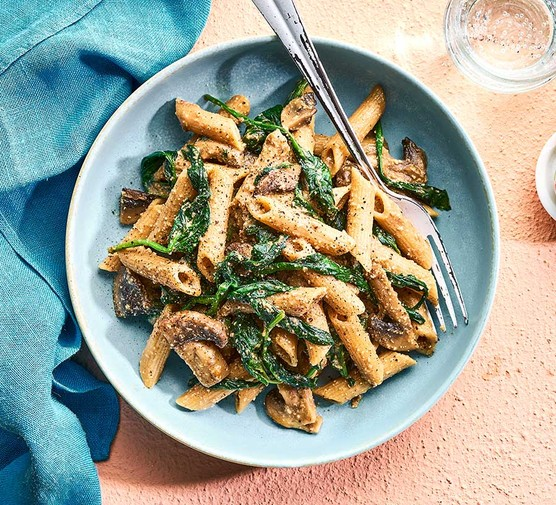

Home
Creamy Mushroom Penne with Spinach

Description
An easy-to-make one-pot dish inspired by Italian cuisine.
Ingredients
- 15g unsalted butter
- 10ml olive oil
- 1 brown onion, diced
- 5 garlic cloves, minced
- 60ml white wine
- 200g swiss brown mushrooms
- 1l chicken stock
- 500ml thickened cooking cream
- 350g penne
- 50g parmigiano reggiano cheese, freshly grated
- 5g parsley, roughly chopped
- 120g baby spinach
- Salt and pepper to taste
Steps
- Place the cooking fats on a large pan/pot along with the diced onion and sautee for a few minutes before adding the garlic and sauteeing for another minute.
- Add the white wine and stir to deglaze the pan. Toss the mushrooms along with some salt and sautee until the mushrooms have softened and the sauce has reduced.
- Pour the chicken stock, cream, salt and pepper on the same pan, and bring it to a boil. Then, add the pasta and reduce the heat. Important: taste the sauce as the pasta is cooking and adjust the seasoning accordingly.
- Add most of the parmigiano and parsley to the pan, leaving some for garnish. Add the baby spinach and mix.
- Once the sauce has thickened and the pasta is al dente, top the dish with the rest of the parmigiano and parsley, along with fresh cracked black pepper and a drizzle of olive oil. Ready to serve!